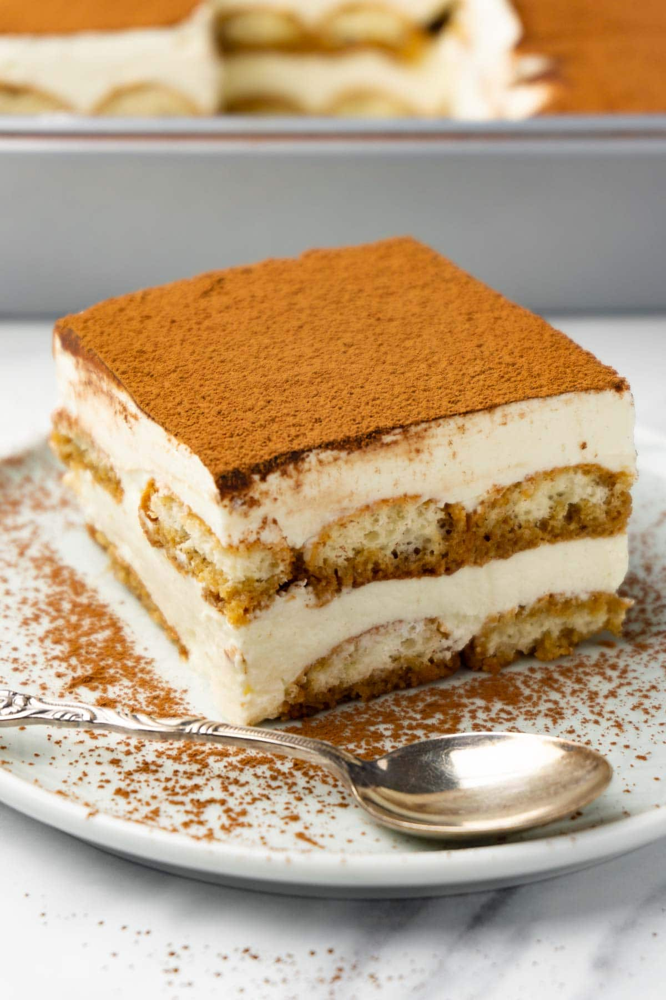

Tiramisu Recipe
Home
Tiramisu Recipe

What is Tiramisu?
It is a delicious coffee dessert that you should definitely try!!!
It is incredibly light and pretty.
Ingredients
- 1 cup instant coffee (use double the recommended amount of coffee grounds recommended on the packaging)
- 4 tablespoons brandy/cognac (or dark rum; divided in half)
- 16 ladyfingers (enough to fill the entire bottom of your baking tray twice)
- 4 egg yolks (MAKE SURE YOU BUY PASTEURIZED EGGS)
- 8 1/2 tablespoons granulated sugar (105g)
- 1 cup heavy cream
- 1 cup mascarpone
- Cocoa powder (for dusting the top)
Steps
- Mix instant coffee and 2 tablespoons of brandy. Using half of the ladyfingers, quickly dip both sides of each ladyfinger in the mixture and place on the bottom of the baking tray. You might need to break some of the ladyfingers to completely fill the layer (it doesn’t have to be tightly packed but there shouldn’t be much space between the ladyfingers
- In a larger bowl, whip together the egg yolks and 1/4 cup (50g) of sugar (either with whisk or hand mixer). Stop when the mixture is thickened enough that it falls in ribbons from the whisk when you lift it up. The ribbons should remain visible on the surface of the mixture for a second before it reintegrates
- In a separate bowl, whip together the heavy cream and remaining sugar (55g) until medium peaks form. Add mascarpone and 2 tablespoons of brandy and keep whipping until it creates a smooth mixture
- Gently fold the cream mixture into the egg yolk mixture until combined using a silicone spatula. Be careful not to over-mix or press too hard while mixing
- Spread half of the mascarpone cream over the prepared ladyfingers in the baking tray
- Dip the remaining ladyfingers in the coffee mixture one at a time and arrange into a layer on top of the mascarpone cream. Spread the rest of the mascarpone cream on top of the ladyfingers and dust a thick layer of cocoa powder on top
- Leave in refrigerator for at least 8 hours to let the flavors fully integrate.
- Enjoy!!